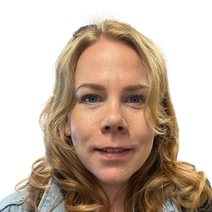

Andrea Luthra Lindaas
Andrea Luthra Lindaas, frontend-utvikler under utdanning og sykepleier med over 16 års erfaring i helsevesenet, spesialisert innen velferdsteknologi. Har kurs og opplæring innen flere løsninger innen velferdsteknologi.
Utdanning
- 2022-2024: Toårig utdanning innen frontend-utvikling fra Noroff School of technology and digital media.
- 2020-2021: Ettårig videreutdanning innen Velferdsteknologi, masternivå, OsloMet.
- 2018-2019: Ettårig utdanning innen Velferdsteknologi fra NKI/Medlearn og Helsedirektoratet.
- 2012-2015: Bachelor i sykepleie fra Diakonova Høyskole
- 2010: Sykkelinstruktør ved Norges idrettshøgskole
- 2010: Grunnkurs i anatomi ved Norges idrettshøgskole
Foredrag
- 2019: Hva er velferdsteknologi? Bruk og aktuelle løsninger - for Bouvet Norge, avd. Oslo.